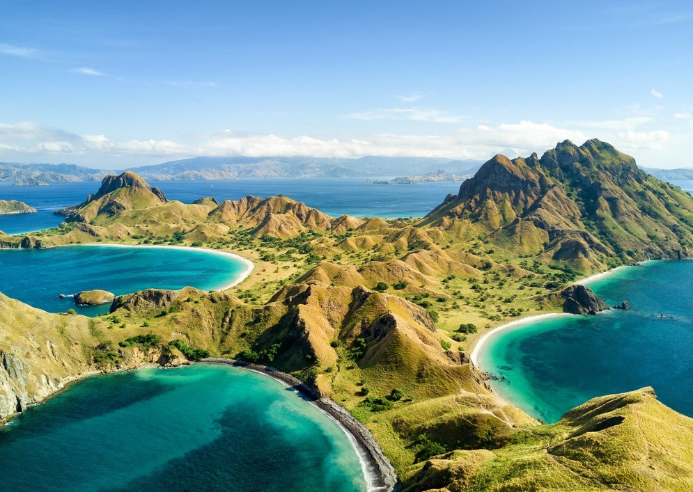

2. Labuan Bajo |
|  |
|
Labuan Bajo adalah sebuah desa yang terletak di Kecamatan Komodo, Kabupaten Manggarai Barat, Provinsi Nusa Tenggara Timur, Indonesia. Desa ini telah mendapatkan ketenaran internasional sebagai salah satu destinasi wisata tersembunyi yang menawarkan pengalaman alam yang luar biasa Labuan Bajo, yang juga dikenal sebagai "Gerbang ke Pulau Komodo," merupakan surga tersembunyi di Indonesia bagian timur. Desa ini memiliki daya tarik utama yang luar biasa, yaitu keberadaan Pulau Komodo, yang menjadi rumah bagi spesies unik, komodo, yang merupakan kadal terbesar di dunia. Sebagai taman nasional yang diakui oleh UNESCO, Pulau Komodo telah menjadi situs warisan dunia, dan Anda dapat melihat komodo dalam habitat alaminya. Selain keberadaan komodo, Labuan Bajo menawarkan pengalaman alam yang memukau, termasuk pantai-pantai indah dengan air laut yang jernih, terumbu karang yang menakjubkan untuk menyelam, dan gua-gua spektakuler yang bisa dijelajahi. Anda dapat melakukan kegiatan snorkeling, menyelam, atau sekadar bersantai di tepi pantai. Labuan Bajo juga dikenal dengan pemandangan bukit-bukit yang menghadap ke laut yang spektakuler. Anda bisa mendaki salah satu bukit ini untuk menikmati matahari terbenam yang menakjubkan atau mengamati bintang-bintang di malam hari. Desa ini adalah tempat yang sempurna bagi para petualang yang mencari pengalaman alam yang luar biasa. Anda dapat menjelajahi alam liar yang belum tersentuh, mendaki gunung, atau berinteraksi dengan penduduk setempat yang ramah. Selain alamnya yang indah, Labuan Bajo juga menawarkan berbagai akomodasi, restoran, dan toko-toko suvenir. Ini adalah tempat yang cocok bagi mereka yang ingin merasakan keajaiban alam Indonesia yang unik dan mengejar petualangan tak terlupakan. |
Paket WisataHarga tur wisata di Labuan Bajo, yang merupakan pintu gerbang ke Taman Nasional Komodo dan Kepulauan Komodo, dapat bervariasi tergantung pada jenis tur, durasi, dan fasilitas yang ditawarkan. Labuan Bajo menawarkan berbagai pilihan tur yang cocok untuk berbagai anggaran. Di bawah ini adalah perkiraan harga untuk berbagai jenis tur dan aktivitas di Labuan Bajo: |
| Jenis | Deskripsi |
|---|---|
| Tur ke Taman Nasional Komodo | Tur harian (pulau-pulau di sekitar Labuan Bajo) Mulai dari sekitar 500 ribu hingga 1 juta Rupiah per orang. |
| Tur ke Pulau Rinca atau Pulau Komodo Mulai dari sekitar 1 juta hingga 1,5 juta Rupiah per orang. | |
| Liveaboard (perjalanan beberapa hari dengan akomodasi di kapal) Harga bervariasi tergantung pada kenyamanan dan fasilitas kapal, biasanya mulai dari beberapa juta hingga puluhan juta Rupiah per orang. | |
| Akomodasi | Penginapan Harga per malam dapat berkisar dari sekitar 300 ribu hingga 1 juta Rupiah, tergantung pada jenis akomodasi. |
| Resort eksklusif Harga bisa mencapai puluhan juta Rupiah per malam. | |
| Transportasi | Tiket pesawat ke Labuan Bajo Harga tiket pesawat bervariasi tergantung pada musim dan waktu pembelian. Harga tiket pesawat internasional ke Indonesia juga harus dipertimbangkan jika Anda bepergian dari luar negeri |
| Biaya Masuk Taman Nasional Komodo | Wisatawan asing dikenakan biaya masuk sekitar 300 ribu hingga 500 ribu Rupiah atau lebih, sedangkan warga negara Indonesia biasanya dikenakan biaya yang lebih rendah. |
| Biaya Makanan dan Transport Lokal | Biaya makanan dan transportasi lokal akan menambah biaya perjalanan Anda. |
|
Harga-harga di atas hanya estimasi, dan harga sebenarnya dapat berubah tergantung pada waktu perjalanan, musim, dan penawaran khusus yang mungkin berlaku. Selalu disarankan untuk memeriksa dengan penyelenggara tur dan penginapan tertentu untuk mendapatkan perkiraan harga yang lebih akurat sesuai dengan rencana perjalanan Anda. Selain itu, pastikan Anda merencanakan perjalanan Anda dengan baik, memesan akomodasi dan tur dengan agen yang andal, serta mengeksplorasi keindahan alam dan budaya di Labuan Bajo. |